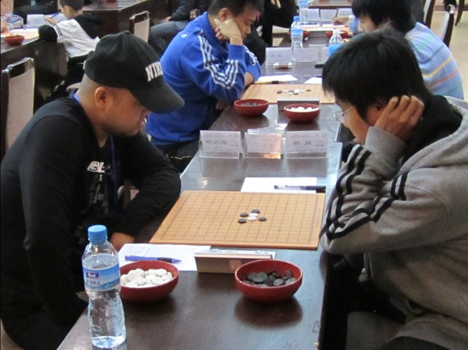
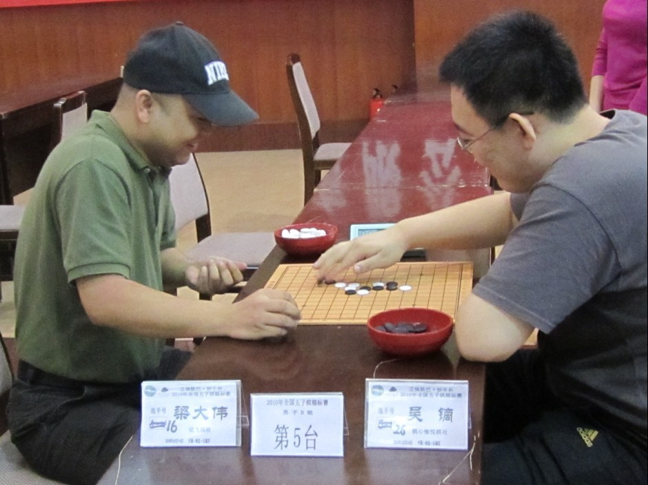
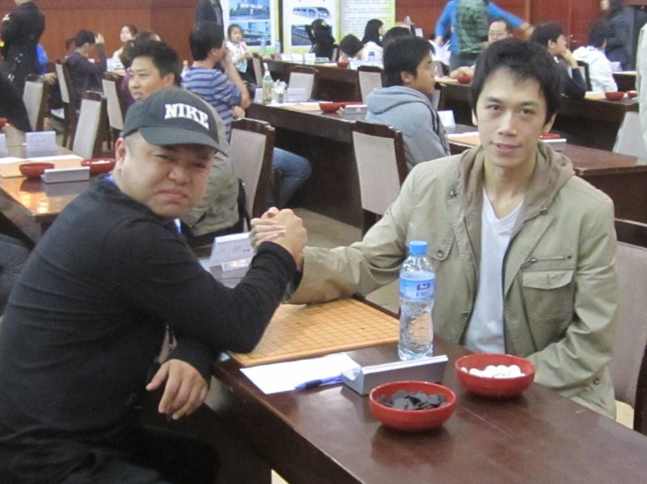

2010全锦赛
首页
≮炫飞☆棋社≯
#1 2010全锦赛 作者：菜农 发表时间：2010-10-11 10:37:43
说事比赛不如说是去玩，本来水平就不高再加这两年不练更差劲，这次没跌出前20已经是我的极限了！不过今年的金花大战到时比以往激烈些，虽然我也是受伤者不过非常过瘾，最终以白痴获得冠军结束了本次扑克大赛
还是聊几盘棋吧! 第一轮对个小朋友开的松月我交换速胜，这么下的忘了。
第二轮对高老师的攻了会儿没攻下来，高师认真的骗了我会儿也没骗死最后和棋，棋谱爱五子棋网上发了。
第三轮对杨波开松月，对手变银月9手故意走的弱点后面黑实际可能有机会但是我不知道乱攻一气，
=======上图对应的爱五子棋谱代码如下，以便你拆解：========
h8h9h7g9g10f9i9g7e9i10g8i8d8f10e7e8f6c9h4g5i6h6i4j5i5i3f4g4g3f2d6e5f7f5d5
======================================================18挡反对手可能认为我会直接做杀，明显没考虑到我先跳出来再做直接VCT必胜了，捡一盘！ 第5论对葛凌峰哈哈已经被沈大侠评论过了就不说了！
第六轮对马世卫，值得尊敬的老棋手！开金星我交换11手想了会怕后面想不起来就没敢走定式，直接盖棉3后来觉得也不错
=======上图对应的爱五子棋谱代码如下，以便你拆解：========
h8h9j8g8i9i10j11h10g10h7f7f9i6g6i8k10i7i5k11j10l10
======================================================12手感觉J9应该应该好一点，直接活3黑右面多路攻直接必胜！ 第七轮对殷铜，头天晚上去喝酒了，回来风尘告诉我是我对手开局所以就没想，结果第二天一看对阵时我开哎真无耻啊！这个他居然也能看错。估计对手肯定对我经常开的局又准备，所以临时开的溪月。对手交换开始防我，无奈接受和棋。不过无所谓了前面已经输的美机会进前8了
=======上图对应的爱五子棋谱代码如下，以便你拆解：========
h8h9i10i9j8i7i6j7i8g8g9k7l7k8l9l8h7k6k5m9n10g6f7i5j6g5g4e7f6e5f5f4d6e6e4l4j4m7k9m5m6
======================================================12想单盖好像意义不大，黑棋随便盖两下白就全被关里面了，41手对手和棋我接受！ 第八轮对曾飞戈我开山月拿白继续老白4，两打打错速胜
=======上图对应的爱五子棋谱代码如下，以便你拆解：========
h8h9i6g10j7g8i10g9g11f9e9e8d7e12i8h11i12j9
====================================================== 第九轮对吴斌，勉强的一盘棋，对手实力还算不错但明显经验不足，也许紧张该攻的时候不攻该缓的时候又太激进。如果正常下棋不是比赛，我想我应该没啥机会赢。
=======上图对应的爱五子棋谱代码如下，以便你拆解：========
h8h9h6i10i6i9g9g8j11i7i8k8j9g6k10l11i12h13f7f8g11j13m10h11h12i13g13g12l10n10k9j8m8l9e10e11d8e9d10c10d9d7d11d12c12f9g5f5e6e4d3h4f3k7l6j6i5k5j4k3l4k4k6j7
======================================================56骗杀，57中招58必胜。侥幸胜 名次论对亲爱的兰兰，由于无所谓的一盘棋，兰兰再必胜的情况下跟我提和，我舔着大脸很勉强的接受了
明年能不能再参加不知道了，以后有机会还是会去玩的！
［ 黄药师 于 2010-10-11 11:47:42 时奖励此帖[金币加 100 威望加1］
［ 炫飞冰弦 于 2010-10-11 22:16:50 时花20金币送鲜花一朵］
［ 掌棋如烟 于 2010-10-15 10:04:37 时花20金币送鲜花一朵］
［ 掌棋如烟 于 2010-10-15 10:04:39 时花20金币送鲜花一朵］
［ 掌棋如烟 于 2010-10-15 10:04:41 时花20金币送鲜花一朵］
#2 Re:2010全锦赛 作者：小帮帮 发表时间：2010-10-11 12:21:30
大师就是大师，写得别有一番风味
#3 Re:2010全锦赛 作者：炫飞冰弦 发表时间：2010-10-11 22:17:18
菜农金花大战中受的伤严重不哇。。。
#4 Re:2010全锦赛 作者：炫飞兔子 发表时间：2010-10-13 9:57:28
菜大叔还是那么好玩！
#5 Re:2010全锦赛 作者：掌棋如烟 发表时间：2010-10-15 10:05:54
老菜,你写这也太应付了吧...
#6 Re:2010全锦赛 作者：炫飞冰弦 发表时间：2010-10-19 15:32:07
附 菜农比赛照～


